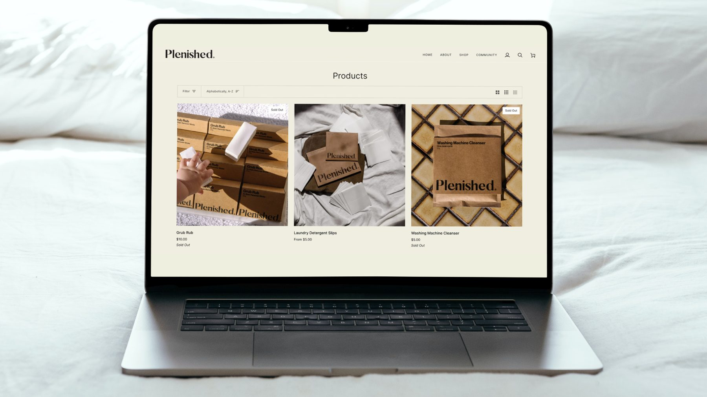
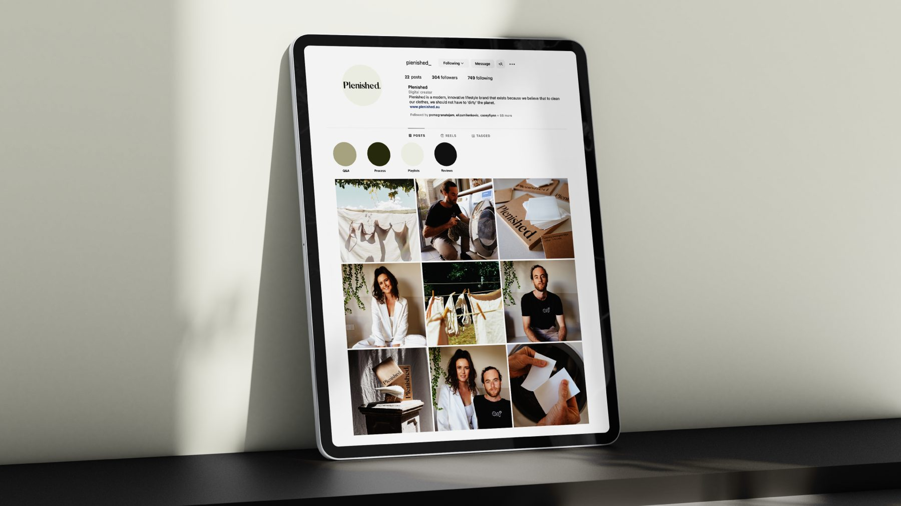
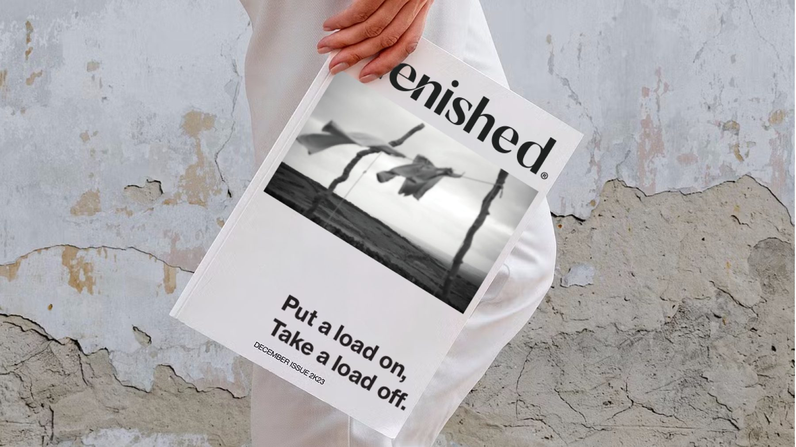
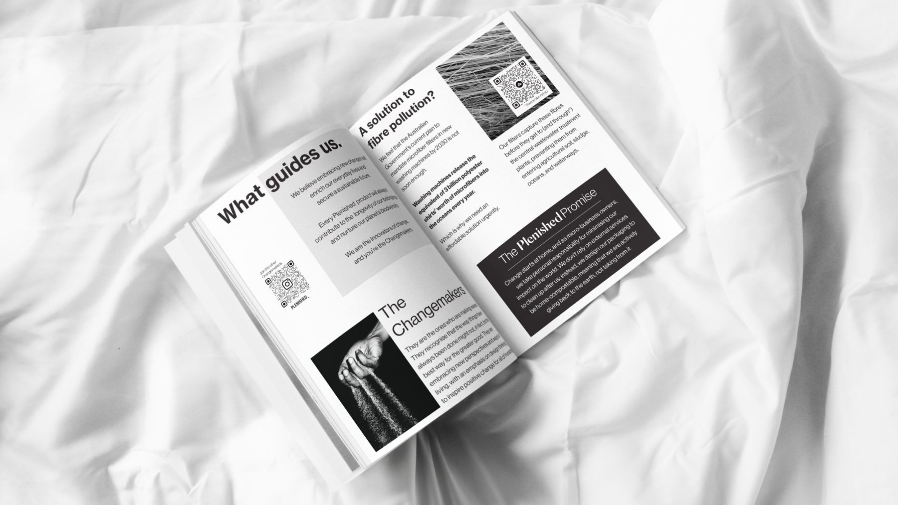
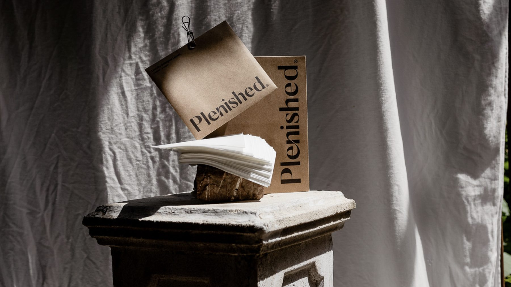

Brand, e-commerce, social, print
Plenished
Laundry that does less harm, sold on values rather than volume.
Plenished is my own brand: laundry products that are 100% home compostable, built around a bigger idea of sharing the mental load at home. I've never wavered on the compostable promise, even when it was the harder path.
Result
A brand that sells a cultural shift as much as a product: equal division of labour, equal carers, and mothers no longer the default parent so they can focus on their careers.
What I did
- Brand identity, packaging and tone of voice
- E-commerce site and product pages
- Social strategy and Instagram grid
- Print editorial, including the “Put a load on, Take a load off” newsletter and a values booklet on fibre pollution and the Plenished Promise




